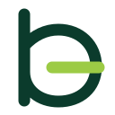
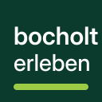
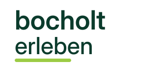

Bocholt erleben · AI Brand Lab #225 isoliertes Richtungs-Gate · keine öffentliche Änderung
Zwei unterschiedliche Markenarchitekturen.
A prüft eine typografische Kleinform. B prüft, ob der vollständige Name ohne behauptetes Bildzeichen stärker ist. Inhalte und Komponenten sind identisch.
Reihenfolge: Echte Rastergrößen, Monochrom und App-Masken zuerst; danach die Produktanwendung.
A · TYPOGRAFISCHE KLEINFORM
Offener Takt
Ein neu konstruiertes kleines b bleibt sofort lesbar. Die horizontale Öffnung trägt eine sekundäre e-Lesart, ohne beide Buchstaben dekorativ zu verschlingen.
81/100Scorecard

Kleinmarke
Vektor-Lockup
Echte Rastergrößen
16243248
App-Masken
Bocholterleben
DEIN SCHNELLER BLICK
Heute rund um Bocholt
Events und Aktivitäten für heute in Bocholt – direkt entdecken.
27. JULI · BOCHOLTAbenteuer HandwerkMitmachen, ausprobieren und Berufe entdecken.
AKTIVITÄT · DRAUSSENAasee erlebenWasser, Wege und Freizeit am Wasser.
Bocholterleben
HeuteEventsAktivitätenInfo
VERANSTALTUNGEN
Veranstaltungen in Bocholt
Alle Events, Märkte und Veranstaltungen aktuell an einem Ort.
30 JUL
IN DER REGIONAaltenDagen
Ein lebendiger Markttag im Zentrum von Aalten.
FÜR VERANSTALTEREvents veröffentlichenEinmalig 9,90 € oder Mitgliedschaft ab 9,99 € im Monat.
STÄRKEbeste kompakte Markenform und direkte Namensbindung
RISIKOB/e-Monogramme sind stark besetzt; vertiefte Ähnlichkeitssuche folgt nach Auswahl
B · RESPONSIVE WORTMARKE
Direktwort
Der vollständige Name ist die Marke. Im App-Icon steht er als kompaktes Namensfeld; nur unterhalb von 48 Pixeln wird eine optisch vereinfachte b-Kleinmarke eingesetzt.
83/100Scorecard

Namens-App-Icon

Vektor-Wortmarke
Echte Rastergrößen
16243248
App-Masken
DEIN SCHNELLER BLICK
Heute rund um Bocholt
Events und Aktivitäten für heute in Bocholt – direkt entdecken.
27. JULI · BOCHOLTAbenteuer HandwerkMitmachen, ausprobieren und Berufe entdecken.
AKTIVITÄT · DRAUSSENAasee erlebenWasser, Wege und Freizeit am Wasser.
HeuteEventsAktivitätenInfo
VERANSTALTUNGEN
Veranstaltungen in Bocholt
Alle Events, Märkte und Veranstaltungen aktuell an einem Ort.
30 JUL
IN DER REGIONAaltenDagen
Ein lebendiger Markttag im Zentrum von Aalten.
FÜR VERANSTALTEREvents veröffentlichenEinmalig 9,90 € oder Mitgliedschaft ab 9,99 € im Monat.
STÄRKEkein erzwungenes Symbol und stärkste Klarheit in öffentlichen Kontexten
RISIKOder beschreibende Name verlangt konsequente Typografie und Absenderführung
Richtungs-Gate
Wähle A oder B. Eine Zurückweisung braucht einen konkreten Knock-out, nicht weitere beliebige Varianten.
 48
48